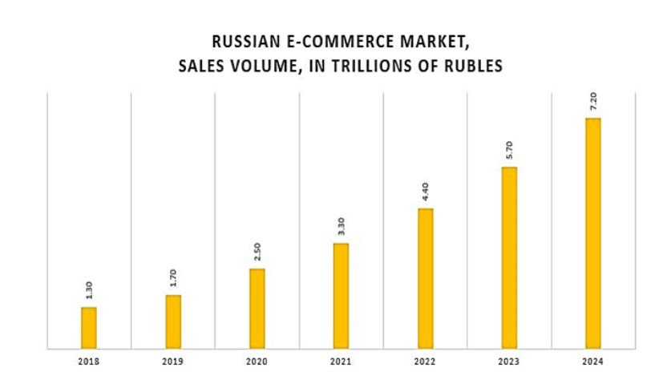

Зачем нужен вебсайт?
Онлайн торговля продолжает расти. Согласно исследованию Data Insight, средний рост интернет-торговли с 2011 по 2019 год составил 28%. За эти годы рынок продаж материальных товаров через интернет вырос с 235 миллиардов рублей до 1,72 триллиона.
Ожидаемый рост продаж в 2024 году – 7,2 трлн. рублей с 1,7 трлн. в 2019 году. · Ожидаемый темп роста рынка 2020-2024 гг.- 33,2%.
Онлайн-присутствие:
Веб-сайт является цифровым представлением
вашего бизнеса. Это
место, где потенциальные
клиенты могут узнать о вас и вашей компании.
Доступность:
Веб-сайт доступен 24/7, что позволяет клиентам
изучать ваши продукты или
услуги в любое удобное
для них время.
Маркетинг:
Веб-сайт является эффективным инструментом маркетинга.
Он может быть
оптимизирован для поисковых систем, чтобы привлекать новых клиентов.